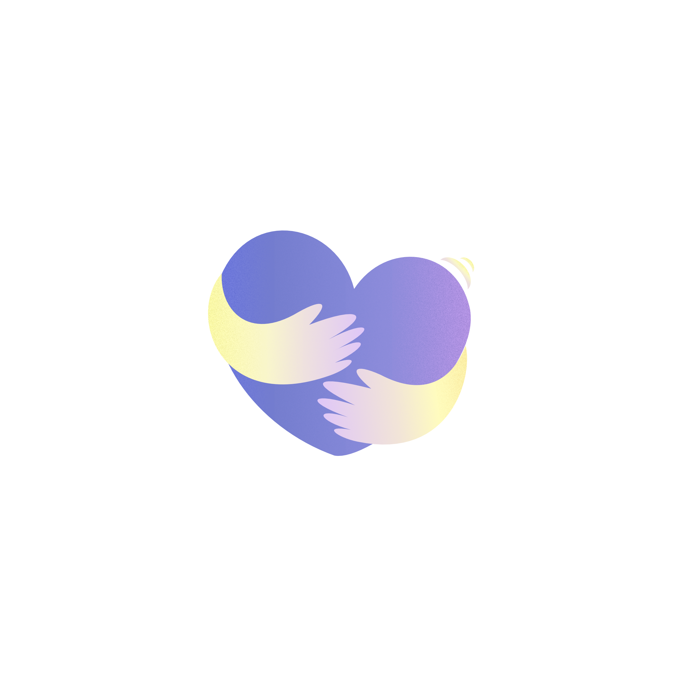
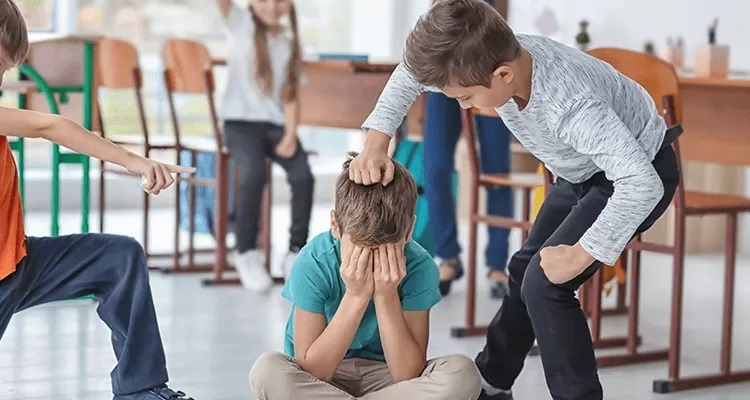
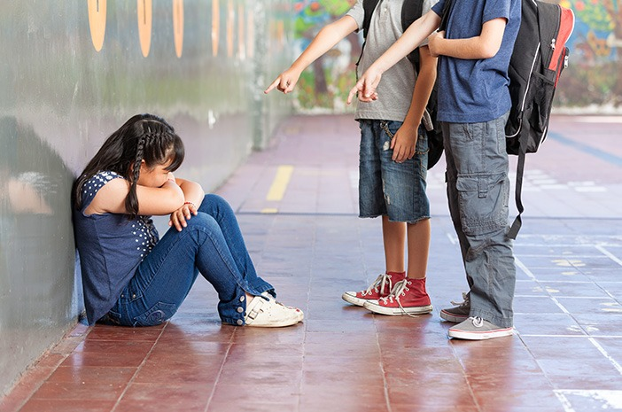
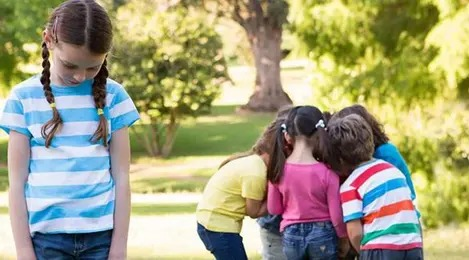
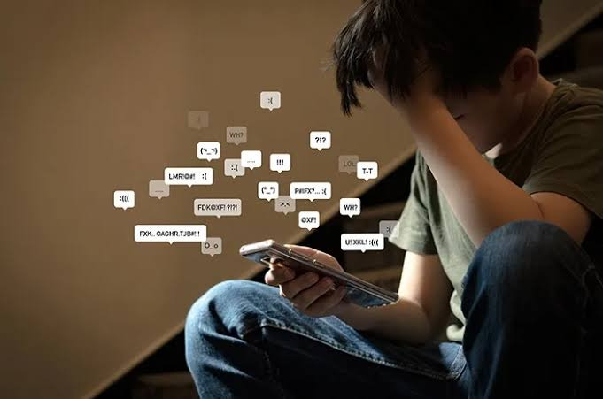

Setiap Orang Berhak Merasa Aman.
Bullying bukan sekadar bercanda. Kenali, pahami, dan hentikan perundungan bersama Teman Ceritamu untuk menciptakan lingkungan sekolah yang ramah, sehat, dan inklusif.

Mengenal Inisiatif Ruang Aman
Teman Ceritamu adalah website edukasi yang mengajak pelajar mengenali bullying, memahami dampaknya, dan mengetahui cara mencari bantuan.
Kenali Perbedaannya
Membedakan konflik biasa dengan perundungan yang memiliki ketimpangan kekuatan dan terjadi berulang.
Panduan Tindakan Nyata
Langkah praktis yang aman untuk korban, saksi (bystander), serta ajakan introspeksi diri yang membangun.
Kanal Pendampingan
Mengetahui pihak tepercaya untuk diajak bicara dan template kalimat sederhana untuk memulai bercerita.
Kenali 4 Bentuk Bullying
Bullying dapat terjadi dalam berbagai wujud, baik secara langsung di sekolah maupun melalui perantara internet. Pahami perbedaannya berikut:

Bullying Fisik
Tindakan menyakiti secara fisik seperti memukul, mendorong, menendang, memalak, atau merusak barang milik orang lain.
Pelajari Detail
Bullying Verbal
Ucapan merendahkan seperti mengejek bentuk tubuh, menghina asal-usul, memberi julukan buruk, atau mengancam.
Pelajari Detail
Bullying Sosial
Perilaku mengucilkan teman dari pergaulan secara sengaja, menyebarkan gosip atau rumor jahat untuk mempermalukannya.
Pelajari Detail
Cyberbullying
Teror dan hinaan melalui media digital, kolom komentar, atau menyebarkan foto memalukan tanpa izin.
Pelajari DetailMengapa Kita Harus Peduli?
Bullying bukan urusan sepele yang hilang dengan sendirinya. Dampaknya dapat memengaruhi perkembangan kepribadian dan masa depan seorang remaja.
Rasa Percaya Diri
Korban sering merasa tidak berharga, menyalahkan diri sendiri, dan kehilangan keyakinan akan potensi diri.
Kesehatan Mental
Dapat memicu kecemasan berkepanjangan (anxiety), stres berat, gangguan tidur, hingga depresi remaja.
Hubungan Sosial
Membuat seseorang menarik diri dari pergaulan, menjadi pendiam, dan kesulitan membangun rasa percaya kepada orang lain.
Kegiatan Belajar
Hilangnya motivasi datang ke sekolah, penurunan konsentrasi saat belajar di kelas, dan merosotnya prestasi akademik.